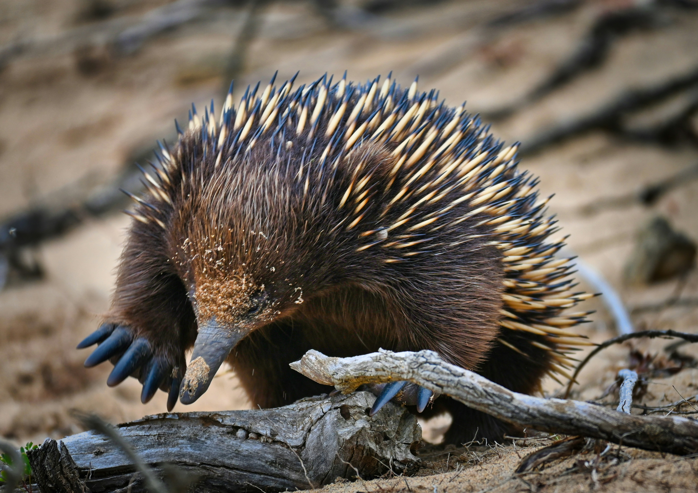
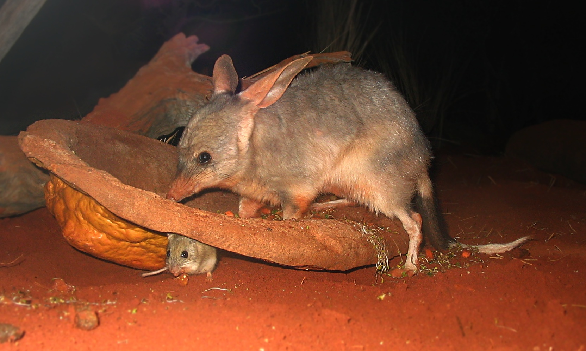

Mammals
Mammals (ma·muhlz) are animals who are warm-blooded, the young feed from milk produced from their mother and (except for whales and dolphins) have fur/are hairy.
Echidna

Echidnas are spiny, egg-laying mammals native to Australia and New Guinea. They have a long snout and sticky tongue to catch insects and are known for their ability to curl into a ball when threatened.
There are four species of echidna:
- Short beaked Echidna
- Sir David's Long-beaked echidna
- Eastern Long-beaked Echidna
- Western Long-beaked Echidna
Short-beaked echidnas live in Tasmania and are able to live in a range of different habitats including:
- Rainforests
- Grasslands
- Deserts
Whereas Long beaked echidnas live in exclusively high-altitude alpine meows and humid mountain. Forest in New Guinea.
Bilbies

Bilbies are small, nocturnal marsupials with long ears and soft fur, found in arid regions of Australia. They are omnivorous, feeding on insects, seeds, and fungi, and are known for their burrowing habits. They are almost like Australia’s version of a Rabbit. There used to be two species of Bilbies, the Greater Bilby and The Lesser Bilby which had become extinct in the early 1950s and the Greater Bilby is now just referred as ‘The Bilby.’
Little Red Flying Fox

The Little Red Flying Fox is a type of bat with a wide distribution and can be found in the northern and eastern Australia. As well as other states in Australia. Known for its reddish fur. It feeds on nectar and fruit, and plays a crucial role in pollination and seed dispersal. These bats roost in large colonies in trees.
These bats are the only flying fox that just eats only nectar. As their tongues have evolved overtime and are similar to honeyeaters, a nectar-feeding bird.